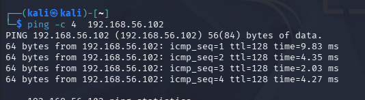
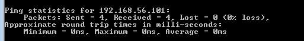
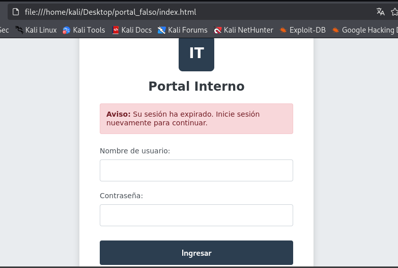

Actividad 04: Una página demasiado convincente
Documentación y simulación de un ataque de ingeniería social en un laboratorio controlado mediante Social-Engineer Toolkit (SET).
Objetivo de la actividad
Implementar y analizar una simulación de ingeniería social generando un sitio falso. El propósito es utilizar el método POST de un formulario web para interceptar credenciales en texto plano, comprendiendo así el funcionamiento de una campaña de phishing.
Descripción del Escenario
Se desarrolló una página web ficticia simulando un portal de inicio de sesión institucional, apoyada por herramientas de IA para optimizar el código HTML/CSS. Se evitó clonar sitios reales para cumplir con las normas del laboratorio.
Configuración del Laboratorio
Para garantizar el aislamiento de la prueba y evitar la exposición a internet, se configuró una red virtual privada (Adaptador Solo Anfitrión).
- Máquina Atacante: Kali Linux (IP:
192.168.56.101) ejecutando el módulo Credential Harvester de SEToolkit. - Máquina Víctima: Windows 7 (IP:
192.168.56.102) fungiendo como el cliente vulnerado. - Vector: Archivo local con un formulario HTTP configurado con el método POST.
Evidencias de Funcionamiento
A continuación, se presentan las pruebas de conectividad y la captura de datos exitosa:



Explicación del Flujo de Captura
El ataque funciona explotando la transmisión de datos a través del protocolo HTTP sin cifrar:
- La víctima realiza una petición
GETa la dirección IP del servidor web falso. - El servidor atacante (Kali/SET) responde entregando el portal HTML.
- La víctima introduce sus datos de acceso y presiona enviar, generando una petición
POST. - Al no existir cifrado SSL/TLS, SET intercepta localmente los parámetros
usernameypassworddirectamente desde el cuerpo de la petición.
Indicadores de Phishing
- URL anómala: Acceso mediante una IP cruda (192.168.56.101).
- Ausencia de cifrado: Falta de certificado SSL/TLS (No es HTTPS).
- Sentido de urgencia: Mensajes alarmantes ("Su sesión ha expirado").
- Diseño genérico: Carencia de identidad corporativa verificable.
- Origen del vector: Spoofing en correos electrónicos.
Controles de Seguridad
- Autenticación Multifactor (MFA): Exige un token temporal adicional.
- Gestores de contraseñas: Bloquean el autocompletado en URLs falsas.
- Filtros EDR/Correo: Bloquean accesos a IPs directas.
- Filtrado DNS: Impide la resolución de servidores maliciosos.
- Concientización: Entrenamiento continuo a empleados.
Documento Formal
Si el docente requiere el archivo formal para evaluación, puedes descargar el reporte completo en formato PDF estructurado.
Descargar Reporte (PDF)